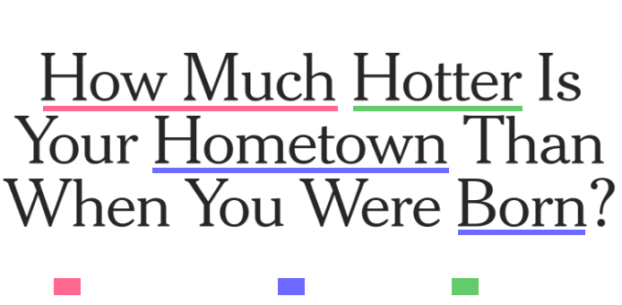
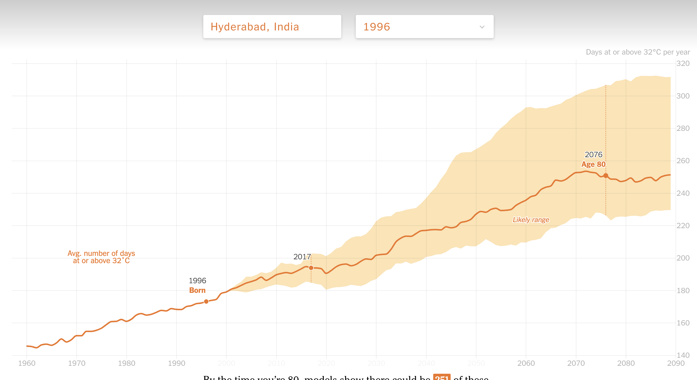
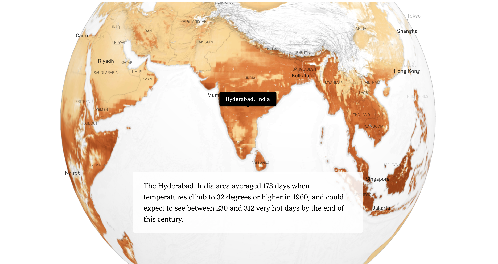
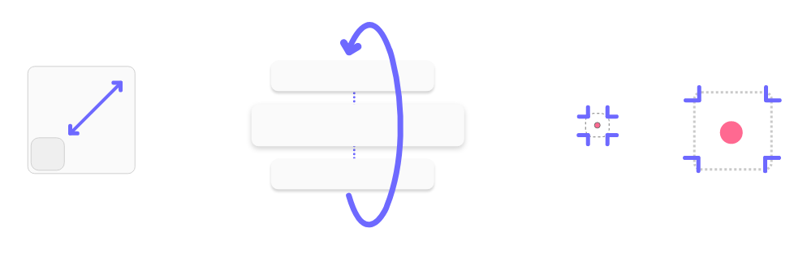

Purpose
To create awareness about global warming, and to help understand the scale of change happening over years. This has been achieve using the act of personalisation and creating a self reflection of how global was has made their hometown hotter. The article tries to convey the information honestly by using historical data of average temperature over the years to an approximate area of the users location.
Breaking down the Heading.
The Heading of the article is the first impression of what the article might constitute. Its the best way to attract audience to view the page/click on the link. The heading although is long, could be broken down to three segments.
It focuses on three key aspects apart from the main topic, i.e to convey that earth is getting relatively hotter. Generating curiosity using the question and personalising the topic makes a much deeper connection with the user.
Visualisation
The visualisation has been achieved using simple line graph and an overall view using a heat map . Emphasis has been put on the narrative to not make it reveal at once, but in stages.
Narrative and Design
The narrative focuses on the increase of average temperature overtime through the years. A temperature of 32deg Celsius was chosen to see and quantify the amount of days the region experiences temperature beyond 32deg. The flow of the article has been restricted on the basis of user input and what the author wants to convey in that particular moment on a step by step process.
The interactive piece use minimal amount of colours depicting warmth. The same palette has also been reused in the heat map ignorer to maintain similar visual language.
Structure of the article.
Unlike the conventional method of structuring an article and digging deeper as the user reads more, this article focuses on putting the interactive part of the article in the focus, and the main story comes up later
Using Personalisation to start the Narrative
Personalisation takes a front seat while navigating through the webpage, it also creates a unique story right from the begining of the webpage. Unique story is much interactive and helps generate more visitors

Revealing the visualisation in stages
The information is revealed is a step by step process. Even a simple is reveleaded in two steps to highligh the two aspects of the story.
Comparison between countires
To understand the impact of the global warming, the webpage also focuses on comparing different regions and showcases a glimpse of the world to make the scale of the event much visible.
Use of Motion(Scroll to reveal)
Use of motion to reveal insights helped putting things in perspective. Also the article focused on involving minimal effort from the user and used 'scroll to reveal' as a addition to the montion.
What-If perspective
The article was focused on showing the truth of how temperature have increased. In addition to that, they could include the amount of action required by humans to alter the line chart to a lower degree of temperature change .
For example: If all humans stop traveling by car and take public transport, the increase of temperature could be cutoff by 50%.
Although, 32 degrees has been chosen as the temperature for comparison. There are lot of countries in the Europe that have fewer than three 32-degree days per year on average throughout the entire time period. This puts a slightly deviated perspective of how less impactful are these cold countries, even though there has been considerable visual difference that people in these regions have experienced in terms of climate change.